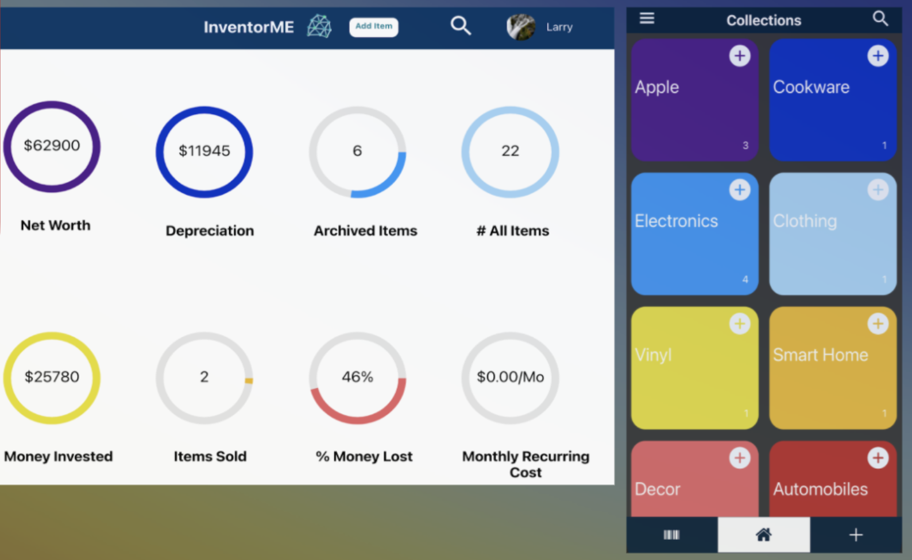
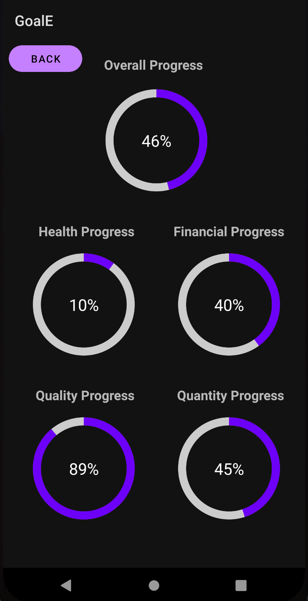
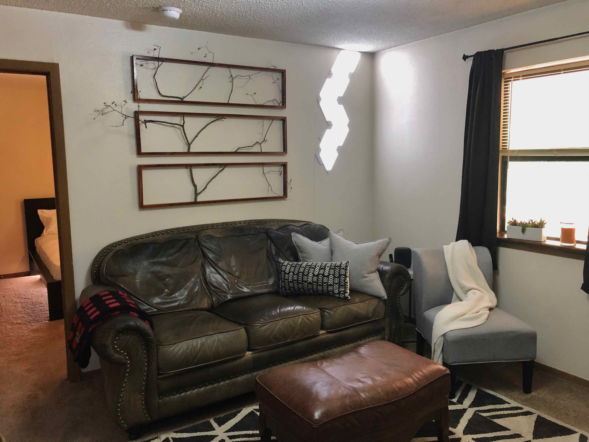
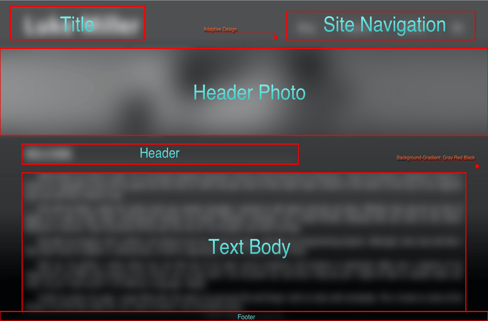
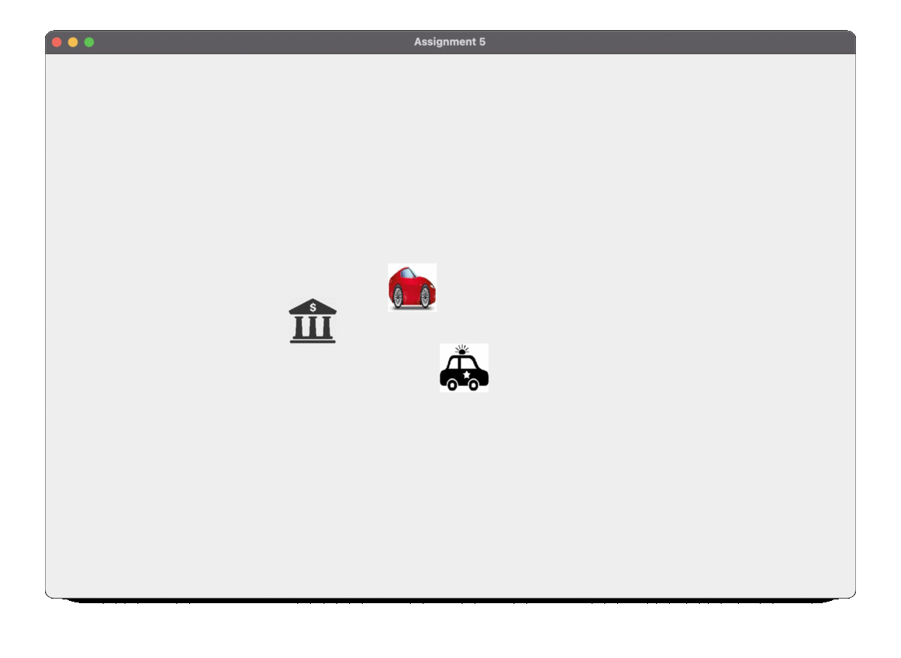
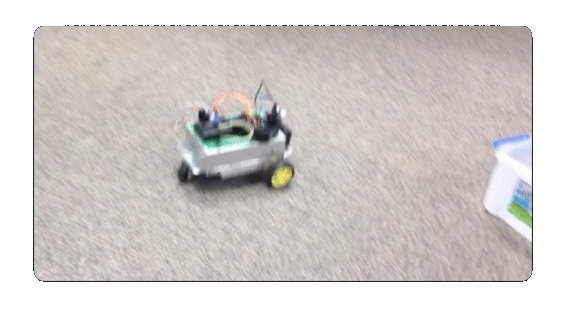

PROJECTS
InventorME
Start: 8.29.20
End: 5.7.21

Some people have a hard time keeping track of their stuff. They do not know the best practices for tracking where
stuff is, how much a thing is worth, or even roughly how much all their stuff is worth. That is where InventorME
comes in. InventorME is a cloud synced personal inventory application that allows you to track your stuff wherever
and
however you want. InventorME is cross platform so you can add an item on your phone then log into your desktop and
edit it on the big screen. The user interface is simple, clean, and extremely easy to use. You can even scan an
item’s barcode to automatically fill in it's info while adding it to your library in app. The design allows you to
see your things in many different views such as a collections view, an archive view, a folders view, and even a
global, all items, view. You can also search your items if you have created a large library of items in your
account. InventorME is secure leveraging Amazon Web Services’ latest technologies stack to make your content
is secure and private. We even back up photos of your items and sync them across all devices. InventorME was my
team’s final project for the University’s Computer Science program. My team worked extremely hard, and the results
paid off. We got an excellent score on the project, and I am proud of the work they put in. This project's code can
be found in the GitHub tab or by clicking “Source Code” above.
Graphics
Start: 1.11.21
End: 5.5.21

Computer Graphics is a course I took my senior year at the University of Arkansas. The main goal of this course
was to learn about the world of computer graphics and the various concepts that make this field of technology so
interesting. We learned about many topics such as 3D modeling, ray tracing, texture mapping, particle systems,
computer viewing, and shading all through the lens of the OpenGL API. We used OpenGL to learn about these concepts
and we built six different projects with the API. The first project we built the seven pieces for Tetris. We
eventually used the concept of the Tetris game for two other projects. The second project was building up our
original Tetris app to make the pieces move in 2D space and not let them escape the window. Later, we used texture
mapping to make the pieces 3D and move in a somewhat of a 3D space. In the third project we used mouse motion
mapping to display a 3D object of rotation like that of what a vase might look like. For the fourth project we
built a toolbox class for various functions that we might use day to day when creating graphical images in OpenGL.
For the final project we had to implement a few concepts to an existing ray tracing file to make the already ray
traced image look even more lifelike. I decided to add the ability for multiple light sources as well as animate
the objects to move around in 3D space. All these projects can be found in the GitHub tab or by clicking “Source
Code” above.
Mobile
Start: 8.24.20
End: 12.10.20

Mobile Programming is a course I took my senior year at the University of Arkansas. There were two main goals of
this course. First, was to learn about the platform of computation that is mobile computing and the added benefits
and shortcomings the platform brings. Secondly, was to add projects to our portfolio that we could potentially
talk about during a job interview. We completed five major projects in the course. The first of these was a simple
calculator, like that of what you would see built into your phone. The second was a To-do list, which gave us a
better look into creating layouts for various screen sizes, as well as notifications and on device databases to
store data locally. The third project was a photo mapping application which allowed you to utilize the camera to
take a photo then save the location of where the photo was taken and display it on a map so you could have a
global view of where all your photos were taken. The fourth application we created was a REST blogging client. The
client utilized an existing REST API to pull in blog posts and we designed all the components to get and post to
the API as well as view all the various data locally on screen. Finally, we were assigned to design an application
with a group of three or less people to be our semester long final assignment. My group chose to do a goal
tracking app called GoalE. GoalE is simple to use and is a great resource to show a global view of all your goals,
as well as sort your goals down and keep track of them in a simple yet powerful way. GoalE’s design is easy enough
for anyone to use and gives a lot of power to the user. All these projects were design using Android Studio and
all the code for them can be found in the GitHub tab or by clicking “Source Code” above.
Branches Piece
Start: 4.19.20
End: 4.24.20

I have this idea for an art piece for above my couch on the wall. There is this space that I have
been really wanting to fill, but I don’t really want just any piece that I can get off the shelves. I want
something truly special. When I was five my parents had the opportunity to buy some land outside of the city
[Springfield, MO]. This is where they got the privilege to build the home I grew up in. This land is the real
privilege though; 14 acres of pure natural Splenda. So, in the spirit of this little section of earth I grew up on
I want to take a branch and section it into 3 parts within three frames. I hoping to construct the frame with my
dad while we both have some free time together, and I think it will make a beautiful piece to show to the people
who visit me in my apartment.
[UPDATE 4.24] The project is mostly complete. I’m just waiting on the glue to harden completely,
but all in all it turned out fantastic. My father picked out the beautiful branch, and although the frame was not
without some flaws from the stain clumping a bit, it ended up gorgeous. Super happy with how it turned out and I
cannot wait to see what visitors think.
Portfolio Website
Start: 3.25.20
Update: 5.26.21

I have been itching to start a website for a while now. I wasn’t quite sure what I wanted it to
be, but I was afraid my skills in web development were starting to wither. I figured being in quarantine would be
a better time than ever. I also figured since I was going into my senior year of college having a portfolio
website might come in handy when I decide to start job hunting. I decided to start with a simple floating header,
and it took me a few days but, I am glad to say, my skills have been renewed. I really did forget how hard plain
HTML and CSS is to style. I think I have a great foundation for the site and so far, I am happy with its design.
I do still have goals for this project. First, I do want to optimize the website more, like clean
up my CSS and get rid of stuff I do not need. I also want to make sure everything is responsive and looks good on
even the smallest of screens. One of the goals with the site was to create a place for my writing, I am proud of
how my blog turned out, I am hoping to keep pace and add more entries soon. Lastly, I want to make sure my site is
as secure as it can be. Although the site is quite static, and no data is really being transferred, I want to see
if I can possibly add more security improvements such as an encrypted SSH.
[UPDATE 5.25.21] I am updating the site to mature its contents a tad. I wish to make it look more
professional for potential people looking to hire me. The site’s design, I believe, still looks great. I am just
going through the content on the pages and making the information more presentable, and less jokey. I am also
adding a few new sections to the “Me” page and retroactively adding previous projects and their descriptions to
the “Projects” page to round out the “portfolio” part of my portfolio website.
Paradigms
Start: 1.13.20
End: 5.7.20

Programming Paradigms is a course I took my junior at the University of Arkansas. The main goal of
the course was to take us from C++ programmers to fully agnostic programmers capable of moving easily to any
language or IDE. I already had experience with many other languages from the previous programming I did at OTC, so
these concepts were ones I mostly knew already. In the class we jogged through 3 different languages: Java,
JavaScript, and Python. The first major project we did was a cops and robbers game. It introduced us to sprites
and event driven programming, as well as the concept of multithreaded processes. We then moved onto JavaScript
which we used for a few different form projects and simple html web views. Then we finally made our way to Python
where we utilized flask to generate a backend server to manage pseudo accounts and edit account attributes to
display after the user signs in. Throughout all of these we learned the various syntactical sugar each language
brings as well as their quirks that could potentially lead to weird bugs if we were not aware of them. All these
projects can be found in the GitHub tab or by clicking “Source Code” above.
Self-Driving Robot
Start: 3.2.17
End: 4.7.17

During my time at my local community college during my senior year of high school they created a Friday class for
us kids because many of the Computer Information Science classes were Monday through Thursday. One of the classes
they created was a Raspberry Pi class. This class was pretty much a playground for us to pick a project that we
found interested us and make the project happen. My group decided to make a self-driving robot. We first got a rig
my friends dad built out of scrap metal, Velcroed some wheels to it, taped an external battery charger to it for
power, and eventually got the wheels to spin. Next, we had to find a way to make it autonomous. We found these
neat ultrasonic proximity sensors that were surprisingly cheap and as soon as they arrived, we got to work. We
wrote an algorithm that would wait till the sensor found a wall then we used a random number generator to tell it
which direction to turn from there. I was surprised at how well it worked. In the end it was pretty much a
glorified Roomba without the vacuum, but it was OUR glorified Roomba without the vacuum. I am sad to say that I
could not find the code for it, since it was many years ago now, but I did find a video of it on my phone, and you
can watch the full video by clicking “Watch Now” above.